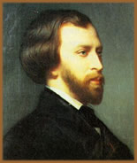
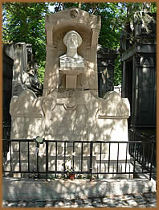

Alfred
Louis Charles de Musset nasceu em Paris no dia 11 de Dezembro
de 1810. Filho de Victor-Donatien de Musset-Pathay e de Edmée
Guyot-Desherbiers, aos nove anos de idade, foi matriculado no
Lycée Henri-IV. Já manifestava nestes primeiros
anos acadêmicos seu talento em relação às
letras; certamente herdado de sua família, na qual seu
pai e avô eram escritores bem conceituados. Sendo que seu
pai mantinha um estreito laço de amizade com Jean-Jacques
Rousseau. Deste modo, não é exagero afirmar que
Rousseau influiu fortemente na fundamentação da
obra de Musset.
Aos dezessete anos, com a obra
A origem de nossos sentimentos, conquistou a segunda
colocação em um concurso de escrita em latim. Em
seguida optou por cursar medicina. Entretanto, por não
se identificar com a profissão, decidiu abandonar o estudo.
Em segudia, ainda envolveu-se com Direito, desenho, ensino da
língua inglesa, piano e saxofone. Paralelamente, orientado
por Paul Focher, passou a freqüentar o Cénacle, o
salão literário da Bibliothèque de l'Arsenal.
Foi neste momento que o jovem Musset percebeu sua vocação
literária.
Com apenas dezenove anos de idade,
em 1829, publicou seu primeiro livro: Contes d'Espagne et
d'Italie, no qual encontrava-se paródias de algumas
obras românticas. Este trabalho elevou o nome de Musset
entre os intelectuais do Cénacle, despertando admiração
por sua ousadia e repúdio por parodiar obras consagradas.
Em 1830, Musset estreou no teatro
a comédia La Nuit vénitienne, na qual tentou
combinar tendências clássicas e românticas.
Esta primeira investida teatral não foi bem sucedida e
sentiu-se desencorajado a continuar escrevendo peças. Entretanto,
apenas três anos mais tarde, retorna ao teatro com La
Coupe et les Lèvres (drama), À quoi rêvent
les jeunes filles? (comédia) e o conto Namouna.
Em 1832, Musset, na ocasião da publicação
da obra Indiana, conhece a escritora George Sand (pseudônimo
da baronesa Amandine Lucie Aurore Dupin), doze anos mais velha.
Musset e Sand iniciam um romance e partem para a Itália.
Durante esta viagem Musset escreve Lorenzaccio. O casal
passa dois anos na Itália quando Musset adoece e George
envolve-se com o médico que cuidava do escritor. O fato
foi determinante para o fim da relação. Após
restabelecer-se, o escritor regressa a Paris. As peças
Le Chandelier, On ne badine pas avec l'Amour
e Il ne faut jurer de rien mantêm-se em cartaz.
Paralelamente, escreve algumas novelas em prosa e a conhecida
Confession d'un enfant du siècle (Confissão
de um filho do século - que registra pela primeira
vez o uso da expressão "Mal do século"
como o estado de desencanto e vaga melancolia). Esta obra é
uma autobiografia consagrada à ex-amante, na qual Musset
manifesta suas lamúrias devido à infidelidade da
companheira. Esta relação também inspirou
a peça On ne badine pas avec l'amour, de 1834.
Entre os anos de 1835 e 1837, Musset
escreve Les Nuits (Nuits de mai, d'août, d'octobre,
de décembre) que se tornaria referência do gênero
romântico da França e que aborda o sofrimento amoroso,
amor e inspiração, na qual o escritor dialoga com
sua musa. Ainda, Lettre à Lamartine, de 1836,
na qual afirma ser o amor a fonte principal da arte. Dessa fase
também surgiram Les Caprices de Marianne e
Un caprice. A partir de 1837 sua saúde já não
apresenta o mesmo vigor da juventude.
Ainda,
foi nomeado bibliotecário do Ministério do Interior;
entretanto, perdeu seu cargo após a Revolução
de 1848, sendo, em seguida, convidado a atuar no Ministério
da Instrução Pública.
Em 24 de Abril de 1845, Musset
e Balzac receberam a Légion d'honneur. Musset, em 1848
e 1850, logrou ingressar na Académie Française,
obtendo sucesso apenas em 1852. Neste momento, devido a uma má
formação cardíaca congênita, o escritor
encontrava-se constantemente adoentado. Sua situação
agravou-se devido ao alcoolismo e a um estilo de vida totalmente
desregrado.
Finalmente, faleceu Alfred Louis
Charles de Musset, em Paris, no dia 2 de maio de 1857. Sobre o
desejo de seu irmão, Paul de Musset, o escritor foi sepultado
no cemitério Père Lachaise onde agora há
uma escultura em sua homenagem. Paul de Musset também foi
responsável pela composição biográfica
póstuma e reedição de várias obras
de Musset.
Em 1859, George Sand publicou Elle
et lui, uma novela autobiográfica em resposta à
Confession d'un enfant du siècle de Musset. A
relação amorosa ainda rendeu, em 1902, uma espécie
de estudo entre a relação afetiva e intelectual
entre Sand e Musset, através do Les Amants de Venise
- George Sand et Musset, de Charles Maurras.
Alfred de Musset encarnou a figura
do poeta boêmio e romântico do século XIX.
Sua obra, fortemente influenciada por Vitor Hugo, solidificou
os conceitos do romantismo na França e ecoou no Brasil
através de Álvares
de Azevedo.
Por Spectrum
Obra
Disponível:
Poemas (Download)